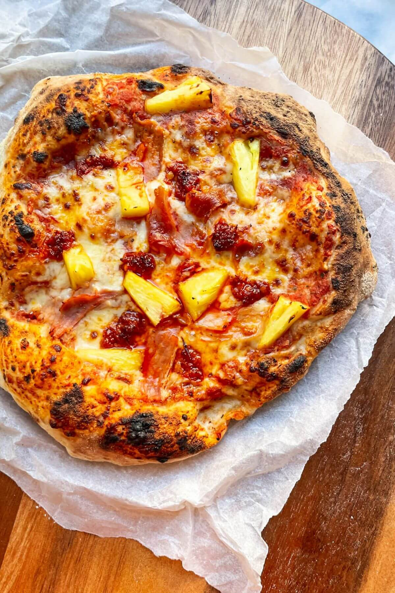

Spicy Hawaiian Pizza

Description
This ooey gooey pizza will have you wishing it only took 5 minutes to make!It will be well worth it though! Make your own dough, or buy some pre made! Read on to find out how YOU can make this delicious dish!
Ingredients
Toppings
- 1/2 cup tomato pizza sauce (or use 1/2 cup passata or crushed tinned tomatoes, mixed with a crushed garlic clove and 1/2 teaspoon of salt)
- 1 cup grated mozzarella
- 1/2 cup chopped pineapple (fresh or tinned)
- 4 large pieces of free range roasted ham, roughly torn
- 4 tablespoon 'nduja paste
Garnish
- 1 tablespoon chilli jam or sweet chilli sauce
- Handful rocket leaves
Dough (Optional)
- 500 g flour (plain, bread or 0 flour)
- 1 teaspoon instant yeast
- 2 teaspoon salt
- 375g lukewarm water
Steps
- Turn the temperature to the highest setting your oven will go (that’s 250C fan for me). When the oven has been heating for at least 45 minutes, top your pizzas.Place your bases on two pieces of baking paper so they’re easier to transfer into the oven. There’s nothing more disappointing than your pizza falling apart when you try to move them (trust me, I have done it!) Divide the pizza sauce between your bases, then scatter over half the mozzarella on each. Dollop the ‘nduja on top, followed by the torn ham and finally, the controversial pineapple pieces.
- Transfer each pizza, on the baking paper, onto the preheated pizza stone/cast iron pan/oven trays and cook for 10 – 15 minutes (check it after 10 – this will depend on the heat of your oven) on the highest rack in your oven. You want the pizza crust to be looking puffy, golden and blistered, the cheese to be bubbling and oozy and the pineapple to be looking lovely and charred. Remove from the oven and drizzle over the sweet chilli jam if you’re using it. Finish with the rocket, then slice and serve straight away.
More Recipes!